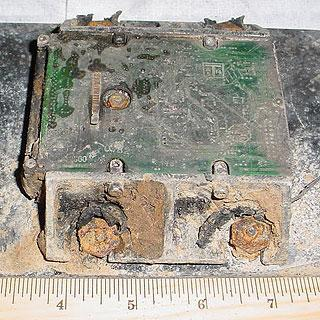

CVX-2
1 февраля 2003 г. шаттл «Колумбия» разрушился при входе в плотные слои атмосферы из-за повреждения крыла куском теплоизоляционной пены. В грузовом отсеке корабль нес 340-мегабайтный жесткий диск, на котором была записана информация об эксперименте CVX-2 (Critical Viscosity of Xenon), в ходе которого изучалось поведения ксенона в условиях микрогравитации.
Проект CVX-2 длился в общей сложности 20 лет, и результаты финального космического эксперимента представляли большую научную ценность. По счастливому стечению обстоятельств жесткий диск не был уничтожен в катастрофе — он упал в озеро, откуда его извлекла поисковая группа. NASA отправили диск в компанию Kroll Ontrack, которая специализируется на восстановлении компьютерных данных
Диск сильно пострадал: расплавились не только металлические и пластиковые элементы, но и крышка, защищающая его от грязи и пыли. Однако алюминиевые пластины, где, собственно, и хранится информация, не разрушились. Их очистили химическим раствором, а затем поместили в другой жесткий диск — точную копию поврежденной модели. Всего за два дня удалось восстановить 99 % данных.
Химические реагенты очень помогают при работе с поврежденными носителями. Прежде чем пытаться что-то восстановить, необходимо как можно ближе подобраться к источнику информации. Реагенты также используются для восстановления физически стертой информации, например, когда речь идет о работе с серийными номерами. Химическое травление является наиболее распространенным и успешным методом восстановления серийных номеров на поверхности металла.